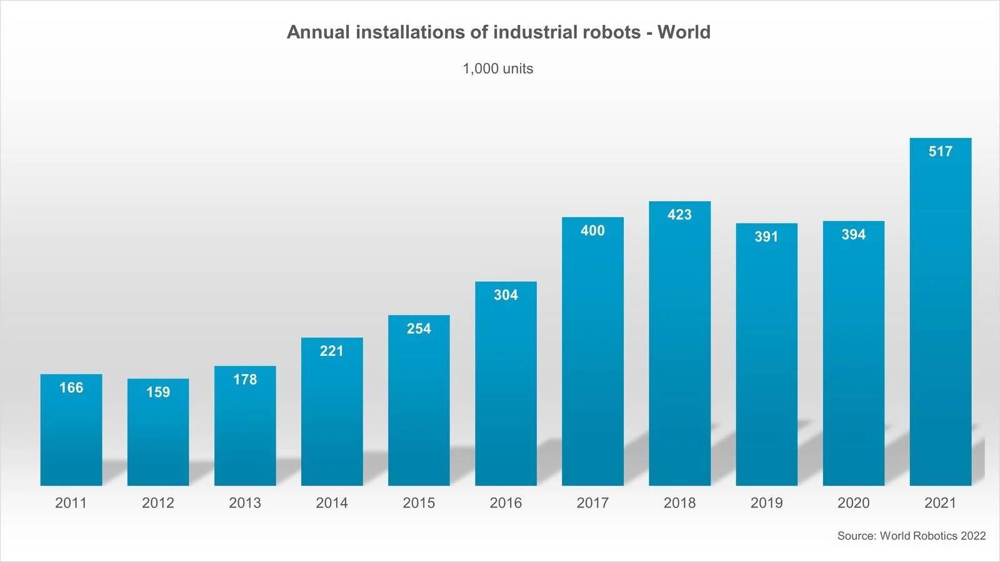

William Croft
The concept of robots has been around for a while, since being birthed after band aids in 1920 (DeMelo, 2022) and sharing the same year of discovery as insulin in 1921 (FayeRiley, n.d.)
but still only as an idea. This first occurrence of a robot happened in a play called Rossum’s Universal Robots written by Karl Capek, that starred mechanical
men that were created to work in factories and then overthrow their human creators. This isn’t too different to the common pop-culture and media we think of
today when we hear the term “robot”, with Terminators and Sentinels or contrastingly, more positive depictions like R2-D2’s and WALL-E’s. However, times have significantly
changed, and we now live in a world where these narratives of machine manservants are a possibility with the ever-advancing wonders of technology.
Simply put, robots are defined as some sort of machine that is able to replicate and perform actions automatically.
The extent of this could possibly be a robot that resembles a human that moves and functions like one too, or merely a
programmable mechanical entity that is capable of carrying out complex calculations or actions without human intervention.
Essentially, “a robot is a type of automated machine that can execute specific tasks with little or no human intervention and with speed and precision,”
(TechTarget, 2021) and thanks to how the field of robotics has developed over the last half-century, we can see a number of different robots with benefits everywhere.
Robots are seeing use in assisting with everyday life, like automating bland and boring chores like vacuuming, handling repetitive jobs on the production line,
assisting with precision in the operating room, exploring the surface of a completely different planet or taking on the job that would otherwise be harmful
or unpredictable to a human. In some cases, robots are even better than man at certain tasks, but it comes with its negatives as much as its positives.
As we continue to research, experiment and develop all sorts of robots with all sorts of instructions, the more we see them appear in the world.
A report from the IFR released an “all time high” analysis that revealed half a million robots installed within a year around the globe.
‘This represents a growth rate of 31% year-on-year and exceeds the pre-pandemic record of robot installation in 2018 by 22%’ (Ifr, 2022) and it’s highly likely we’ll
continue to see this number increase at a phenomenal speed in the next few years, with Japan and South Korea leading the charge. These countries have been world leaders
in the development of robotic innovation and development, applying their technology in numerous ways and internationally, like one portraying a seal to
help ‘Ukrainian children with development disabilities and post-traumatic stress disorder’ (Japan Times, 2022). Another recent implementation of automated wonder are
delivery robots – little self-driving couriers delivering goods like groceries, by air or by pavement which continue to grow in number. An Estonian robotics company
confirmed that ‘300 self-driving bots launched in Britain in 2018 and make about 1,000 deliveries in the country each day,’ (Taylor, 2022) but obviously this begs the question,
what about our current, human delivery drivers?

The rollout of more robots into the workforce, naturally you’d ask what happens to their human counterparts? Many individuals
and courier unions are concerned about losing employment and degrading conditions, which has continued to be an existing concern
for as long as robots came to be. Unfortunately, they have a basis of which their concern is valid, as research conducted in the US by
Professor Pascual Restrepo found that ‘industrial robots do have a negative impact on workers.' (Brown, 2020) The research suggest that many who find themselves
employed in the automotive industry and people who perform physical labor are more likely to feel the effects of robots being adopted into their respective industries.
They’re more efficient and completely automatic and multipurpose, filling many roles once occupied by people.
The automotive industry itself accounts for 38% of existing industrial robots due to employing them quicker and more integrally, which
puts the ratio at 7.5 robots per thousand workers. (Brown, 2020) Wages won’t just be affected but employment too could see negative impacts,
or to put a number on it, ‘for every robot added per 1,000 workers in the U.S., wages decline by 0.42% and the employment-to-population ratio goes down
by 0.2 percentage points — to date, this means the loss of about 400,000 jobs.’ (Brown, 2020) But the future of mankind co-existing with
robots shouldn’t be so dim, and while there is both fear and hype over robots, we should welcome them further into our ecosystem to better our lives,
combining them with other technologies and industries to create jobs, rather than take them.
Robots will inevitably continue to evolve whether some like it or not, and whether that leads to our mechanical rapture is yet to be seen,
but that isn’t to say it will all be bad. Human-robot interactions will improve and reap benefits from advancements in artificial intelligence,
innovative technologies will encourage new generations of robots to better automate and streamline once human-touched jobs. Developments such as
Natural Language Processing and AI and Machine Learning all go into helping robots evolve into machines that can better understand certain environments,
analyze patterns and realize information. All to improve the interactions between robots and man, better their autonomy and reduce human intervention.
Other enhancements may feature computer vision - allowing robots to better identify and learn about specific objects or greater navigation and motion control –
improving self-navigation and surroundings analysis without error. Many of these creations, combinations and enhancements will likely be
key to yielding amazing results and changing the world around us.
The world around me, however, could see quite the change in the near future, in both good and bad ways. Inferring from the growing evidence
of the impacts robots are having in the workforce already and the fact that they will only ever continue to be integrated into industry pipelines,
makes one wonder whether I, or those around me, will be able to keep our jobs. It feels almost foreboding but remains a very valid question and one
that realistically won’t see an answer until robots are further developed. Even the question of finding employment, let alone keeping it, also brings
to light how this could potentially complicate the lives of myself and those around me.
However, in the sense many jobs will be lost, new ones might be created, ones for example, that maintain robots or ones we’ve never
considered or needed before. Could we potentially reach a time where robots could handle this aspect themselves? ‘Robots will increase
economic growth and productivity and create new career opportunities for many people worldwide. However, there are still warnings out there
about massive job losses, forecasting losses of 20 million manufacturing jobs by 2030, or how 30% of all jobs could be automated by 2030.’ (Terra, 2022)
The downsides are as clear as day, but what benefits are we yet to receive?
Our daily lives could look a little different in the future - everyone might be proud owners of Roomba’s or
other robots to replace mundane chores, or even be accompanied by a very yellow robot dog from Boston Dynamics (Ackerman, 2022)
to replace the mess and medical fees of biological dogs. Buying a Zinger Box one day might mean I’ll be interacting with a
robot rather than a human or in my old age, I might be looked after by some sort of nursing robot rather than a nurse- human.
While it remains doubtful that robots will steal all jobs, it also makes me curious as to whether people will end up with more free
time because robots are handling the work. This could see less stress-related health issues and an increase in general happiness with
more time to enjoy the life that is often missed or devoted to corporations – in the end, robots are there to improve the quality of life of humans.
As frightening and exciting as it is to wonder, we probably won’t be seeing any fully functional, independent C3PO’s running wild anytime soon.